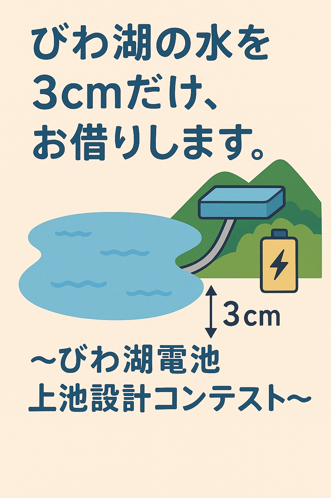

3cm の おはなし
びわ湖には、たくさんの水が たまっています。 その水の たった 3cmぶんを、 山のうえの池にくみあげて、あとでおとすと...

大きなまちの ひとびとが、
なんと 3日間も でんきをつかって くらせるくらいの、
エネルギーが たまるんだよ！
自然の力を そっと かりて、
みんなの でんきを ためておけるのが、
「びわこでんち」なんだね。
びわこのみずをひるのたいようが
でているときにやまのうえにつくった
ダムにソーラーパワーでくみあげるんだ
よるになると、ソーラーはつでんできないので
ダムのみずをつかってかわりにはつでんすんだよ。
これでほかのはつでんほうほうをつかわずに
よるもひるも、みんなでんきがつかえるんだ
かりょくはつでんというものをへらせるので
ちきゅうおんだんかも、とめられるんだ。
たった３ｃｍのびわこのみずをつかうだけ
「びわこでんち」をおうえんしてください。